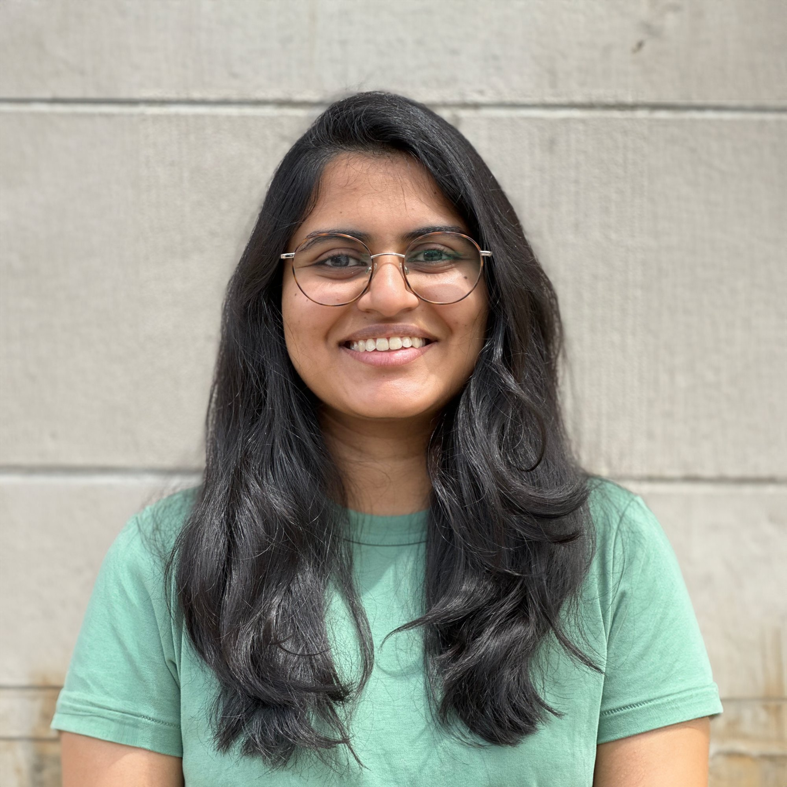

Hello! I am a Ph.D. student in Economics at Yale University. My primary field is Labor Economics. I am interested in how labor market institutions and policies shape outcomes for workers, particularly in developing country contexts.
Before starting my PhD, I worked in economic consulting at Cornerstone Research. I grew up in Dar es Salaam, Tanzania.
Expense shocks—large, unexpected household outlays—are a common source of liquidity risk. This paper studies how households absorb them by linking an original survey of more than 3,000 households to high-frequency transaction panel data. Between January 2025 and March 2026, 65% of households reported experiencing a shock, and the median shock equals 46% of monthly household income. Using a difference-in-differences design, we find that expense shocks moderately reduce food expenditures by 2.1% on average, with stronger effects among lower-income households. Consumption responses vary sharply with shock size: shocks worth half to one month of household income reduce food expenditures by 8.1%, while the effects of smaller and larger shocks are small and statistically indistinguishable from zero. This non-monotonicity partly reflects financing: households cover small shocks with cash and large shocks with loans, while medium-sized shocks are too large for liquid buffers but too small for costlier financing.